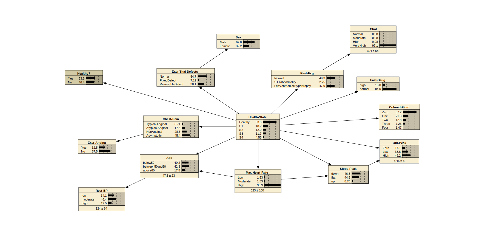
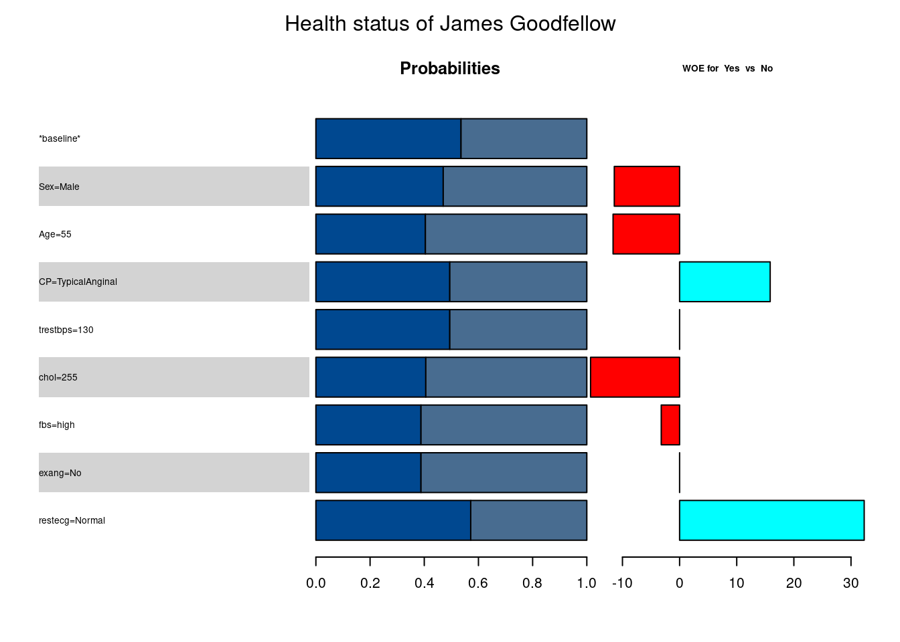

library(PNetica)
sess <- NeticaSession()
startSession(sess)Netica 6.07 Linux (AFCl64), (C) 1992-2019 Norsys Software Corp.
Netica is operating without a password; there are some limitations.
This example is based on a study by (janosi1989?) and recorded in the UCI Machine Learning Repository ((Murphy1992?)). The direct link is: https://archive.ics.uci.edu/dataset/45/heart+disease
Madigan & Almond (1995) used it as an extended example.
library(PNetica)
sess <- NeticaSession()
startSession(sess)Netica 6.07 Linux (AFCl64), (C) 1992-2019 Norsys Software Corp.
Netica is operating without a password; there are some limitations.A saved version of the network can be found Heart/Heart.dne

Note that some of the nodes have a number, plus or minus a second number.
This is the Expected value, plus or minus the standard deviation.
This can be done in one of two ways.
Colored-Flor and Health-State` (which represents number of blood vessels with high levels of blockage).Age, Rest-BP, Max-Heart-Rate, Chol and Old-Peakcut).Inf and -Inf are legal cut points.Note: Netica deals with continuous nodes by discritizing them.
If all nodes in a Bayesian network are discrete, the propagation algorithms involve only sums not integrals.
For graphs with a mixture of continuous and discrete variables, the propagation algorithms may involve integrals that can’t be solved analytically.
Look at the node Healty?
This is a reduction of the Health-State variable, collapsing states S1 through S4 into the single category No.
The conditional probability table only has 0 or 1 as entries.
Can be represented with a table:
| Health-State | Healthy? |
|---|---|
| Healthy | Yes |
| S1 | No |
| S2 | No |
| S3 | No |
| S4 | No |
This is really useful for conditioning on Healthy? = No.
Start by loading the network.
Note, need to pass reference to NeticaSession to ReadNetworks.
Calling NetworkAllNodes builds R objects which point at internal Netica objects.
Need to redo these steps every time R session is restarted.
heart <- ReadNetworks("Heart/Heart.dne",sess)
heart.nodes <- NetworkAllNodes(heart)A NeticaBN or NeticaNode object is active if it points to an object inside of the Netica heap.
Saving/restorting the R object will disconnect it from its corresponding Netica object.
NeticaSession and NeticaNetwork objects wrap R environments which contain the networks and nodes respectively. So can access with $ operator.
sess$nets$HeartNetica Network named Heart
Network is currently active.
Nodes: Age ca chol CP exang fbs ...
and 9 others.heart$nodes$AgeContinuous Netica Node named Age in network Heart
Node is currently active.The basic function for querying the network is NodeBelief. This gives the marginal probability of the node.
Note that the network needs to be compiled before doing inference.
CompileNetwork(heart)
health <- NetworkFindNode(heart,"health")
baseline <- NodeBeliefs(health)
print(baseline,digits=2)Healthy S1 S2 S3 S4
0.536 0.182 0.120 0.117 0.045 This is the unconditional probability. To get the conditional probability, we need to add some evidence.
As we have mapped the states to numeric values we can also get the mean and variance.
NodeExpectedValue(health)[1] 0.9545453
attr(,"std_dev")
[1] 1.237094James Goodfellow is a 55 year old man who comes to the doctor complaining of typical anginal pain.
The NodeFinding function is used to set (or get) the value of a node. As Age is a continuous node, its finding can be entered directly with NodeValue
NodeFinding(heart$nodes$Sex) <- "Male"
NodeFinding(heart$nodes$CP) <- "TypicalAnginal"
NodeValue(heart$nodes$Age) <- 55
NodeFinding(heart$nodes$Age) between50and60
"between50and60" The value of the beliefs for the target mode have now changed.
office <- NodeBeliefs(health)
print(rbind(baseline=baseline,office=office),digits=2) Healthy S1 S2 S3 S4
baseline 0.54 0.18 0.12 0.117 0.045
office 0.49 0.29 0.11 0.039 0.061Assume that the nurse takes Mr. Goodfellows resting blood pressure and it is 130.
NodeValue(heart$nodes$trestbps) <- 130
bp <- NodeBeliefs(health)
print(rbind(baseline=baseline,office=office,bp=bp),digits=2) Healthy S1 S2 S3 S4
baseline 0.54 0.18 0.12 0.117 0.045
office 0.49 0.29 0.11 0.039 0.061
bp 0.49 0.29 0.11 0.039 0.061Why didn’t it change?
Look closely at the graph. The path between Rest-BP and Health-State goes through Age which is known. Therefore, the resting blood pressure provides no additional information.
The function RetractNodeFinding clears it.
RetractNodeFinding(heart$nodes$trestbps)Suppose that the doctor is not able to classify the Mr. Goodfellow’s complaint other than to say it is not Asymptomatic. The EnterNegativeFindings function allows eliminating one of the findings.
RetractNodeFinding(heart$nodes$CP)
before <- NodeBeliefs(heart$nodes$CP)
EnterNegativeFinding(heart$nodes$CP,"Asymptomatic")
after <- NodeBeliefs(heart$nodes$CP)
print(cbind(before=before, after=after),digits=3) before after
TypicalAnginal 0.0827 0.171
AtypicalAnginal 0.1509 0.311
NonAnginal 0.2511 0.518
Asymptomatic 0.5153 0.000The probability is now spread out over the other categories.
Can eliminate more than one categories.
RetractNodeFinding(heart$nodes$CP)
before <- NodeBeliefs(heart$nodes$CP)
EnterNegativeFinding(heart$nodes$CP,c("Asymptomatic","NonAnginal"))
after <- NodeBeliefs(heart$nodes$CP)
print(cbind(before=before, after=after),digits=3) before after
TypicalAnginal 0.0827 0.354
AtypicalAnginal 0.1509 0.646
NonAnginal 0.2511 0.000
Asymptomatic 0.5153 0.000Finally, if the evidence from a sensor is uncertain, a likelihood can be entered.
Suppose that the technician doing the thalium stress test is uncertain about the result. They are pretty sure (80%) there is a defect, but they are uncertain as to whether it is fixed or reversible.
This can be expressed as a likelihood: c(.2,.4,.4) and can be set using NodeLikelihood
NodeFinding(heart$nodes$CP) <- "TypicalAnginal" ## Return to previous state.
NodeLikelihood(heart$nodes$thal) <- c(.2,.4,.4)
thalTest <- NodeBeliefs(health)
print(rbind(baseline=baseline,office=office,thaliumStressTest=thalTest),digits=3) Healthy S1 S2 S3 S4
baseline 0.536 0.182 0.120 0.1169 0.0455
office 0.494 0.291 0.114 0.0393 0.0610
thaliumStressTest 0.419 0.322 0.137 0.0476 0.0738The first pass of the propagation algorithm calculates the probability of all of the observed (including vitrual observations) findings, that is the likelihood of the observations.
The function FindingsProbablity extracts this.
FindingsProbability(heart)[1] 0.007482985For contrast, lets retract the findings and move back to the baseline.
RetractNetFindings(heart)
FindingsProbability(heart)[1] 1How much does each observation contribute to the conclusion that James Goodfellow is healthy.
One measure is the weight of evidence (WOE; Good (1950)).
\[ WOE(H:E) = \log \frac{P(H|E)}{P(\neg H|E)} - \log \frac{P(H)}{P(\neg H)} = \log \frac{P(E|H)}{P(E|\neg H)} \]
Note that this can be calculated by simply differencing the probability of the target node before and after.
As the value of the other nodes changes, the WOE will as well.
The conditional weight of evidence is defined by:
\[ WOE(H:E_1|E_2) = \log \frac{P(H|E_1,E_2)}{P(\neg H|E_1,E_2)} - \log \frac{P(H|E_1)}{P(\neg H|E_1)} = \log \frac{P(E_2|H,E_1)}{P(E_2|\neg H,E_1)} \]
Note that these add:
\[ WOE(H: E_1, E_2) = WOE(H: E_1) + WOE(H: E_2|E_1) \]
We can use this to evaluate evidence as it come in
jgoodfellow <- list(
Sex="Male",
Age=55,
CP="TypicalAnginal",
trestbps=130,
chol=255,
fbs="high",
exang="No",
restecg="Normal") Build up a history
RetractNetFindings(heart)
healthy <- NetworkFindNode(heart,"healthy")
baseline <- NodeBeliefs(healthy)
hist <- matrix(baseline,nrow=1,dimnames=list(c("*baseline*"),names(baseline)))
for (i in 1:length(jgoodfellow)) {
nodename <- names(jgoodfellow)[i]
nodeval <- jgoodfellow[[i]]
node <- NetworkFindNode(heart,nodename)
if (is.numeric(nodeval)) {
NodeValue(node) <- nodeval
} else {
NodeFinding(node) <- nodeval
}
event <- paste(nodename,nodeval,sep="=")
probs <- NodeBeliefs(healthy)
hist <- rbind(hist,probs)
rownames(hist)[i+1] <- event
}
hist Yes No
*baseline* 0.5357143 0.4642856
Sex=Male 0.4700126 0.5299874
Age=55 0.4041534 0.5958466
CP=TypicalAnginal 0.4942228 0.5057772
trestbps=130 0.4942228 0.5057772
chol=255 0.4056582 0.5943418
fbs=high 0.3879469 0.6120530
exang=No 0.3879469 0.6120530
restecg=Normal 0.5714988 0.4285012The function woe calculates the joint WOE of all of the nodes.
woe(heart.nodes[names(jgoodfellow)],healthy,"Yes")[1] 6.291509The function CPTtools::woeHist provides a history of the changes.
jgoodHist <- woeHist(hist,"Yes","No")
print(jgoodHist,digits=2) Sex=Male Age=55 CP=TypicalAnginal trestbps=130
-11.4 -11.6 15.9 0.0
chol=255 fbs=high exang=No restecg=Normal
-15.6 -3.2 0.0 32.3 (madigan1997?) provides a nice graphical summary. The function CPTtools::woeBal generates this.
woeBal(hist,"Yes","No",title="Health status of James Goodfellow")
The total weight of evidence does not change with the order in which it is entered.
The incremental weight of evidence is order sensitive.
To illustrate this, enter the blood pressure before entering the sex.
RetractNetFindings(heart)
healthy <- NetworkFindNode(heart,"healthy")
baseline <- NodeBeliefs(healthy)
hist1 <- matrix(baseline,nrow=1,dimnames=list(c("*baseline*"),names(baseline)))
for (i in c(4,1:3,5:length(jgoodfellow))) {
nodename <- names(jgoodfellow)[i]
nodeval <- jgoodfellow[[i]]
node <- NetworkFindNode(heart,nodename)
if (is.numeric(nodeval)) {
NodeValue(node) <- nodeval
} else {
NodeFinding(node) <- nodeval
}
event <- paste(nodename,nodeval,sep="=")
probs <- NodeBeliefs(healthy)
hist1 <- rbind(hist1,probs)
rownames(hist1)[nrow(hist1)] <- event
}
jgoodHist1 <- woeHist(hist1,"Yes","No")
print(cbind(order0=jgoodHist,order1=jgoodHist1),digits=3) order0 order1
Sex=Male -11.43 0.0178
Age=55 -11.64 -11.4047
CP=TypicalAnginal 15.86 -11.6867
trestbps=130 0.00 15.8552
chol=255 -15.58 -15.5840
fbs=high -3.21 -3.2141
exang=No 0.00 0.0000
restecg=Normal 32.31 32.3080Suppose the cardiologist is interested in determining the health status of Mr. Goodfellow. There are a number of information measures that can be used to evaluate the tests (corresponding to nodes in the network).
Good & Card (1971) propose using the expected weight of evidence as a measure of potential information.
\[ EWOE (H: E) = \sum_{e \in E} W(H:e) P(e|H). \]
Note this is the expectation wrt the conditional distribution given the hypothesis (using the marginal distribution will have expectation).
Madigan & Almond (1995) offers a simple algorithm for calculating the EWOE for a number of nodes at once.
NodeBeliefs(\(E_i\)))The function ewoe does this for us.
enodes <- heart.nodes[c("thal", "ca", "thalach", "slope", "oldpeak")]
print(ewoe(enodes,healthy,"Yes"),digits=2) thal ca thalach slope oldpeak
25.87 21.14 0.62 12.87 11.07 EWOE only works with binary hypotheses. A similar measure which works with all states is the mutual information.
\[MI(X,Y) = \sum_{x,y} Pr(x,y) \log \frac{\Pr(x,y)}{Pr(x)Pr(y)}\] To use it as test selection metric, we select a target node, and then calculate the mutual information with all of the potential evidence nodes.
In the Netica GUI, you can do this by selecting the target node, and then the menu item `Network > Sensitivity to Findings …”
In the API, we call the MutualInfo function for each target.
print(MutualInfo(health,enodes),digits=3) thal ca thalach slope oldpeak
0.2056 0.2039 0.0101 0.1151 0.1181 As the target node has numeric values, another meaningful measure is the reduction in variance. This is also reported in the Netica report, or can be calculated with the VarianceOfReal function.
print(VarianceOfReal(health,enodes)) thal ca thalach slope oldpeak
0.24554364 0.27209573 0.01638281 0.15160286 0.17215686 Basic idea. Sufficient statistic for conditional probability table is contingency table with parent and child variable. We can calculate this from a data set.
library(tidyverse)── Attaching packages ─────────────────────────────────────── tidyverse 1.3.1 ──✔ ggplot2 3.3.5 ✔ purrr 1.0.1
✔ tibble 3.1.6 ✔ dplyr 1.0.8
✔ tidyr 1.2.0 ✔ stringr 1.4.0
✔ readr 2.1.2 ✔ forcats 0.5.1── Conflicts ────────────────────────────────────────── tidyverse_conflicts() ──
✖ dplyr::filter() masks stats::filter()
✖ dplyr::lag() masks stats::lag()Read in the Cleveland data set from (janosi1989?). The heart.features is information about the coding from the web site.
heart.features <- list(
Age=c(0,below50=50,between50and60=60,above60=100),
Sex=c(Male=1,Female=0),
CP=c(TypicalAnginal=1, AtypicalAnginal=2, NonAnginal=3, Asymptomatic=4),
trestbps=c(0,low=120,moderate=140,high=300),
chol=c(0,Normal=200, Moderate=250, High=300, VeryHigh=750),
fbs=c(high=1,normal=0),
restecg=c(Normal=0, STTabnormality=0, LeftVentricularHypertrophy=2),
thalach=c(0,Low=130,Moderate=160,High=500),
exang=c(Yes=1, No=0),
oldpeak=c(-10,Zero=1,Low=2,High=10),
slope=c(down=1, flat=2, up=3),
ca=c(Zero=0, One=1, Two=2, Three=3, Four=4),
thal=c(Normal=3, FixedDefect=6, ReversibleDefect=7),
health=c(Healthy=0, S1=1, S2=2, S3=3, S4=4)
)
heart.cont <- sapply(heart.features,function(states) length(names(states)[1])==0L)
cleveland <- read_csv("Heart/processed.cleveland.csv",
col_names=names(heart.features),
col_types=str_pad("",
width=length(heart.features),
pad="n"),
na="?")
for (var in names(heart.features)) {
states <- heart.features[[var]]
if (names(states)[1]=="") {
## Continuous node, use cut to create variable.
cleveland[[var]] <- cut(cleveland[[var]],as.numeric(states),
labels=names(states)[-1])
} else {
## Discrete node, use factor.
cleveland[[var]] <- factor(as.integer(cleveland[[var]]),
levels=as.integer(states),labels=names(states))
}
}
cleveland# A tibble: 303 × 14
Age Sex CP trestbps chol fbs restecg thalach exang oldpeak slope
<fct> <fct> <fct> <fct> <fct> <fct> <fct> <fct> <fct> <fct> <fct>
1 above60 Male Typi… high Mode… high LeftVe… Modera… No High up
2 above60 Male Asym… high High norm… LeftVe… Low Yes Low flat
3 above60 Male Asym… low Mode… norm… LeftVe… Low Yes High flat
4 below50 Male NonA… moderate Mode… norm… Normal High No High up
5 below50 Fema… Atyp… moderate Mode… norm… LeftVe… High No Low down
6 between… Male Atyp… low Mode… norm… Normal High No Zero down
7 above60 Fema… Asym… moderate High norm… LeftVe… Modera… No High up
8 between… Fema… Asym… low Very… norm… Normal High Yes Zero down
9 above60 Male Asym… moderate High norm… LeftVe… Modera… No Low flat
10 between… Male Asym… moderate Mode… high LeftVe… Modera… Yes High up
# … with 293 more rows, and 3 more variables: ca <fct>, thal <fct>,
# health <fct>For this example, I’ve saved out the network structure, both the node positions and the parents of each node. Read this in:
heart.structure <- dget("Heart/heartinfo.R")Make a new network
heart1 <- GetNamedNetworks("Heart1",sess)
if (!is.null(heart1)) DeleteNetwork(heart1)
heart1 <- CreateNetwork("Heart1",sess)
NetworkTitle(heart1) <- "Heart example built from Cleveland data."for ( nodename in names(heart.features)) {
states <- heart.features[[nodename]]
if (all(names(states)!="")) {
## Discrete Node
newnode <- NewDiscreteNode(heart1,nodename,names(states))
NodeLevels(newnode) <- as.numeric(states)
} else {
newnode <- NewContinuousNode(heart1,nodename)
NodeLevels(newnode) <- as.numeric(states)
NodeStates(newnode) <- names(states)[-1]
}
## Fix properties
NodeTitle(newnode) <- heart.structure[[nodename]]$title
NodeVisPos(newnode) <- heart.structure[[nodename]]$pos
}
heart1.nodes <- NetworkAllNodes(heart1)The easiest way of inputting the structure is to look at the list of parents for all nodes.
for (nodename in names(heart.structure)) {
parnames <- heart.structure[[nodename]]$parents
if (length(parnames)==0L) next
node <- heart1.nodes[[nodename]]
if (is.null(node)) next
parents <- heart1.nodes[parnames]
NodeParents(node) <- parents
}Node sets allow variables to be tagged according to how they are used.
NodeSets(heart1$nodes$health) <- "Target"
NetworkNodesInSet(heart1,"office") <-
heart1.nodes[c("Age","Sex","CP","trestbps","chol","fbs")]
NetworkNodesInSet(heart1,"lab") <-
heart1.nodes[c("restecg", "thalach", "exang", "oldpeak", "slope", "ca", "thal")]Age <- heart1.nodes[["Age"]]
parnames <- ParentNames(Age)
AgeTab <- table(cleveland[c(parnames,"Age")])
AgeTab, , Age = below50
health
thalach Healthy S1 S2 S3 S4
Low 1 3 2 3 1
Moderate 16 7 3 4 0
High 48 4 0 1 1
, , Age = between50and60
health
thalach Healthy S1 S2 S3 S4
Low 7 7 3 11 1
Moderate 26 12 12 4 3
High 31 8 2 2 1
, , Age = above60
health
thalach Healthy S1 S2 S3 S4
Low 8 3 6 4 3
Moderate 22 8 7 4 2
High 5 3 1 2 1There are basically two representations for CPTs, arrays CPTtools::CPA and data frames, CPTtools::CPF
as.CPF(AgeTab) thalach health Age.below50 Age.between50and60 Age.above60
1 Low Healthy 1 7 8
2 Moderate Healthy 16 26 22
3 High Healthy 48 31 5
4 Low S1 3 7 3
5 Moderate S1 7 12 8
6 High S1 4 8 3
7 Low S2 2 3 6
8 Moderate S2 3 12 7
9 High S2 0 2 1
10 Low S3 3 11 4
11 Moderate S3 4 4 4
12 High S3 1 2 2
13 Low S4 1 1 3
14 Moderate S4 0 3 2
15 High S4 1 1 1Add 1/(Number of states) to get rid of zeros and then normalize
normalize(as.CPF(AgeTab+1/NodeNumStates(Age))) thalach health Age.below50 Age.between50and60 Age.above60
1 Low Healthy 0.07843137 0.4313725 0.4901961
2 Moderate Healthy 0.25128205 0.4051282 0.3435897
3 High Healthy 0.56862745 0.3686275 0.0627451
4 Low S1 0.23809524 0.5238095 0.2380952
5 Moderate S1 0.26190476 0.4404762 0.2976190
6 High S1 0.27083333 0.5208333 0.2083333
7 Low S2 0.19444444 0.2777778 0.5277778
8 Moderate S2 0.14492754 0.5362319 0.3188406
9 High S2 0.08333333 0.5833333 0.3333333
10 Low S3 0.17543860 0.5964912 0.2280702
11 Moderate S3 0.33333333 0.3333333 0.3333333
12 High S3 0.22222222 0.3888889 0.3888889
13 Low S4 0.22222222 0.2222222 0.5555556
14 Moderate S4 0.05555556 0.5555556 0.3888889
15 High S4 0.33333333 0.3333333 0.3333333Age[] <- normalize(as.CPF(AgeTab+1/NodeNumStates(Age)))
Age[] thalach health Age.below50 Age.between50and60 Age.above60
1 Low Healthy 0.07843138 0.4313726 0.4901961
2 Moderate Healthy 0.25128207 0.4051282 0.3435898
3 High Healthy 0.56862748 0.3686275 0.0627451
4 Low S1 0.23809524 0.5238096 0.2380952
5 Moderate S1 0.26190478 0.4404762 0.2976190
6 High S1 0.27083334 0.5208333 0.2083333
7 Low S2 0.19444445 0.2777778 0.5277778
8 Moderate S2 0.14492753 0.5362319 0.3188406
9 High S2 0.08333334 0.5833333 0.3333333
10 Low S3 0.17543860 0.5964912 0.2280702
11 Moderate S3 0.33333334 0.3333333 0.3333333
12 High S3 0.22222222 0.3888889 0.3888889
13 Low S4 0.22222222 0.2222222 0.5555556
14 Moderate S4 0.05555556 0.5555556 0.3888889
15 High S4 0.33333334 0.3333333 0.3333333The NodeProbs function uses the array format.
NodeProbs(Age), , Age = below50
health
thalach Healthy S1 S2 S3 S4
Low 0.07843138 0.2380952 0.19444445 0.1754386 0.22222222
Moderate 0.25128207 0.2619048 0.14492753 0.3333333 0.05555556
High 0.56862748 0.2708333 0.08333334 0.2222222 0.33333334
, , Age = between50and60
health
thalach Healthy S1 S2 S3 S4
Low 0.4313726 0.5238096 0.2777778 0.5964912 0.2222222
Moderate 0.4051282 0.4404762 0.5362319 0.3333333 0.5555556
High 0.3686275 0.5208333 0.5833333 0.3888889 0.3333333
, , Age = above60
health
thalach Healthy S1 S2 S3 S4
Low 0.4901961 0.2380952 0.5277778 0.2280702 0.5555556
Moderate 0.3435898 0.2976190 0.3188406 0.3333333 0.3888889
High 0.0627451 0.2083333 0.3333333 0.3888889 0.3333333
attr(,"class")
[1] "CPA" "array"for (node in heart1.nodes) {
tab <- table(cleveland[c(ParentNames(node),NodeName(node))])
node[] <- normalize(as.CPF(tab+1/NodeNumStates(node)))
}This is a deterministic node and requires special treatment.
healthy <- NewDiscreteNode(heart1,"healthy") # Default states are Yes, No
NodeTitle(healthy) <- "Healthy?"
NodeParents(healthy) <- list(heart1$nodes$health)
NodeVisPos(healthy) <- heart.structure[["healthy"]]$pos
healthy[["Healthy"]] <- "Yes"
healthy[[c("S1","S2","S3","S4")]] <- "No"
healthy[[]] health healthy
1 Healthy Yes
2 S1 No
3 S2 No
4 S3 No
5 S4 NoCompiling the network will give a warning if any node lacks a CPT.
CompileNetwork(heart1)Write it out.
tmpfile <- tempfile("Heart",fileext=".dne") ## DNE is ascii representations; NETA is binary
WriteNetworks(heart1,tmpfile)Netica supports case files, which are essentially CSV files. These are easier ways to manage large numbers of cases.
The function CaseFileStream() generates a new file stream. The functions ReadFindings() and WriteFindings() read and write to the case stream.
As we want the CaseStream to stay open while we are reading, explicitly call OpenCaseStream and CloseCaseStream.
Note that good programming style requires that the CaseStream be closed when you are done with it. To ensure this, use WithOpenCaseStream(stream,{...}).
casefile <- tempfile(fileext=".cas")
filestream <- CaseFileStream(casefile,session=sess)
WithOpenCaseStream(filestream, {
## Do some stuff
})
## Or equivalently use the withr::defer construct
{
OpenCaseStream(filestream)
withr::defer(CloseCaseStream(filestream))
}Note that the CaseStream is opened in the Netica environment, not the R environment.
Start by generating random cases.
Note that Netica uses a different random number sequence than R. To make a reproducible sequence, we need to create a NeticaRNG object and give it a seed. Use the FreeNeticaRNG method to free it when you are done (or use WithNeticaRNG to free it at the end of the computation.
You can also associate the RNG with a network using NetworkSetRNG().
CompileNetwork(heart)
RetractNetFindings(heart)
rnodes <- NetworkAllNodes(heart)
casefile <- tempfile("heartrandom",fileext=".cas")
filestream <- CaseFileStream(casefile,session=sess)
rng <- NewNeticaRNG(12345,session=sess)
N <- 10L
WithRNG(rng,
WithOpenCaseStream(filestream,
for (n in 1L:N) {
GenerateRandomCase(rnodes,rng=rng)
WriteFindings(rnodes,filestream,n)
RetractNetFindings(heart)
}))
ranCases <- read.CaseFile(casefile,session=sess)
ranCases IDnum health thal restecg fbs ca
1 1 Healthy Normal Normal normal One
2 2 S1 ReversibleDefect Normal normal Four
3 3 Healthy Normal LeftVentricularHypertrophy normal Zero
4 4 Healthy FixedDefect Normal normal Three
5 5 Healthy ReversibleDefect Normal normal Zero
6 6 Healthy Normal Normal normal Zero
7 7 S1 Normal LeftVentricularHypertrophy normal Zero
8 8 Healthy ReversibleDefect Normal normal One
9 9 Healthy Normal LeftVentricularHypertrophy normal Zero
10 10 Healthy Normal LeftVentricularHypertrophy normal Zero
thalach slope CP healthy oldpeak Age Sex chol
1 336.8150 down Asymptomatic Yes 1.797370 83.09490 Male 336.272
2 447.8580 down Asymptomatic No 1.620750 24.84530 Male 375.803
3 167.0890 up NonAnginal Yes 2.078560 5.79728 Female 344.551
4 14.9075 down AtypicalAnginal Yes 1.460710 74.15340 Male 346.944
5 273.5120 flat NonAnginal Yes 0.716837 29.03160 Male 423.564
6 385.7460 down NonAnginal Yes 1.785150 43.65560 Male 448.651
7 167.2420 down Asymptomatic No 2.658360 28.84410 Male 479.814
8 462.3440 up AtypicalAnginal Yes -8.350040 30.89620 Male 485.311
9 485.7980 down NonAnginal Yes 1.343940 10.48630 Female 448.566
10 391.5800 flat NonAnginal Yes -6.699450 1.43075 Male 320.405
exang trestbps
1 Yes 141.8620
2 Yes 136.2370
3 Yes 132.9230
4 No 129.0380
5 No 134.2890
6 No 135.1820
7 No 139.9000
8 No 122.9250
9 No 27.2462
10 No 122.2600The function read.CaseFile reads the generated cases and sets them up as a data frame.
Note that continuous variables are left at their numeric values. Need to reread cleveland data and not do the conversion this time.
cleveland1 <- read_csv("Heart/processed.cleveland.csv",
col_names=names(heart.features),
col_types=str_pad("",
width=length(heart.features),
pad="n"),
na="?")
for (var in names(heart.features)) {
states <- heart.features[[var]]
if (names(states)[1]=="") {
## Continuous node, leave as is create variable.
} else {
## Discrete node, use factor.
cleveland1[[var]] <- factor(as.integer(cleveland1[[var]]),
levels=as.integer(states),labels=names(states))
}
}
write.CaseFile(cleveland1,"Heart/cleveland.cas",session=sess)While we are at it, lets convert the Swiss and Hungarian data to case files.
swiss <- read_csv("Heart/processed.switzerland.csv",
col_names=names(heart.features),
col_types=str_pad("",
width=length(heart.features),
pad="n"),
na="?")
hungary <- read_csv("Heart/processed.hungarian.csv",
col_names=names(heart.features),
col_types=str_pad("",
width=length(heart.features),
pad="n"),
na="?")
for (var in names(heart.features)) {
states <- heart.features[[var]]
if (names(states)[1]=="") {
## Continuous node, leave as is create variable.
} else {
## Discrete node, use factor.
swiss[[var]] <- factor(as.integer(swiss[[var]]),
levels=as.integer(states),labels=names(states))
hungary[[var]] <- factor(as.integer(hungary[[var]]),
levels=as.integer(states),labels=names(states))
}
}
write.CaseFile(swiss,"Heart/switzerland.cas",session=sess)
write.CaseFile(hungary,"Heart/hungary.cas",session=sess)Bulk Scoring can be done by looping through the case file.
swissStream <- CaseFileStream("Heart/switzerland.cas",sess)
testnodes <- c(NetworkNodesInSet(heart,"office"),
NetworkNodesInSet(heart,"lab"))
WithOpenCaseStream(swissStream, {
for (i in 1L:10L) {
RetractNetFindings(heart)
swissStream <-
ReadFindings(testnodes,
swissStream,
ifelse(i==1L,"FIRST","NEXT"))
cat("Case ", i,"\n")
print(NodeBeliefs(health),digits=3)
if (is.na(getCaseStreamPos(swissStream))) break
}
})Case 1
Healthy S1 S2 S3 S4
0.6670 0.1447 0.0245 0.0319 0.1319
Case 2
Healthy S1 S2 S3 S4
0.3438 0.1901 0.0833 0.2095 0.1733
Case 3
Healthy S1 S2 S3 S4
0.3438 0.1901 0.0833 0.2095 0.1733
Case 4
Healthy S1 S2 S3 S4
0.3438 0.1901 0.0833 0.2095 0.1733
Case 5
Healthy S1 S2 S3 S4
0.5600 0.1681 0.0502 0.1226 0.0992
Case 6
Healthy S1 S2 S3 S4
0.5648 0.1808 0.0436 0.1094 0.1014
Case 7
Healthy S1 S2 S3 S4
0.8201 0.0730 0.0186 0.0483 0.0400
Case 8
Healthy S1 S2 S3 S4
0.8224 0.0781 0.0161 0.0428 0.0406
Case 9
Healthy S1 S2 S3 S4
0.3438 0.1901 0.0833 0.2095 0.1733
Case 10
Healthy S1 S2 S3 S4
0.3438 0.1901 0.0833 0.2095 0.1733 Obviously, what we want to do is compare this to the actual readings. The NetworkTester allows us to do that.
RetractNetFindings(heart)
swiss.test <-
testNetwork(list(health),
OpenCaseStream(swissStream))
summary(swiss.test) ErrorRate LogLoss QuadraticLoss kappa QWK lambda
health 0.8292683 1.827684 0.912821 -0.06385144 -0.03701352 -0.36
LinearLambda
health -0.3445783With a case stream we can learn all of the CPTs at once.
lnodes <- c(NetworkNodesInSet(heart1,"office"),
NetworkNodesInSet(heart1,"lab"))
invisible(sapply(lnodes,DeleteNodeTable))
LearnCases("Heart/cleveland.cas",lnodes)Look at the new values.
Node experience is how many responses were used in that row of the table.
heart1$nodes$trestbps[] Age trestbps.low trestbps.moderate trestbps.high
1 below50 0.3222222 0.5444444 0.1333333
2 between50and60 0.1640625 0.5000000 0.3359375
3 above60 0.1382979 0.3723404 0.4893617NodeExperience(heart1$nodes$trestbps)Age
below50 between50and60 above60
90 128 94 LearnCases uses the same counting algorithm shown above (building the CPT), so it doesn’t handle missing data.
LearnCPTs does. There are three methods. I recommend EM
invisible(sapply(lnodes,DeleteNodeTable))
LearnCPTs("Heart/cleveland.cas",lnodes, method="EM")NULLheart1$nodes$trestbps[] Age trestbps.low trestbps.moderate trestbps.high
1 below50 0.3218391 0.5517241 0.1264368
2 between50and60 0.1600000 0.5039999 0.3360000
3 above60 0.1318682 0.3736264 0.4945054NodeExperience(heart1$nodes$trestbps)Age
below50 between50and60 above60
87.00003 125.00003 91.00003 (This was some code I used to fix and issue with the initial version of the test network which had the continuous nodes coded as discrete.)
heart.info <- lapply(heart.nodes, function (nd) {
list(parents = ParentNames(nd),
cpt = NodeProbs(nd),
pos= NodeVisPos(nd),
title=NodeTitle(nd))
})Number of states of Age has changed, need to fix some CPTs.
fixme <- c("Age","trestbps")
for (nodename in fixme) {
xtab <- as.array(table(cleveland[c(heart.info[[nodename]]$parents,nodename)]))
class(xtab) <- c("CPA","array")
probs <- normalize(xtab+1/last(dim(xtab)))
heart.info[[nodename]]$cpt <- probs
}for ( nodename in names(heart.features)) {
states <- heart.features[[nodename]]
if (all(names(states)!="")) next
oldnode <- heart.nodes[[nodename]]
## Save old data
title <- NodeTitle(oldnode)
descrip <- NodeDescription(oldnode)
vispos <- NodeVisPos(oldnode)
## Replace node
DeleteNodes(oldnode)
newnode <- NewContinuousNode(heart,nodename)
## Fix properties
NodeTitle(newnode) <- title
NodeDescription(newnode) <- descrip
NodeVisPos(newnode) <- vispos
## Fix the states
NodeLevels(newnode) <- as.numeric(states)
NodeStates(newnode) <- names(states)[-1]
## Fix the list of nodes.
heart.nodes[[nodename]] <- newnode
}## Fix up any set of broken parent relationships.
for (nodename in names(heart.info)) {
cat(nodename,"\n")
node <- heart.nodes[[nodename]]
parents <- heart.nodes[heart.info[[nodename]]$parents]
NodeParents(node) <- parents
NodeProbs(node) <- heart.info[[nodename]]$cpt
}CompileNetwork(heart)
WriteNetworks(heart,"Heart/Heart.dne")NodeStates(heart$nodes$CP)[4] <- "Asymptomatic"